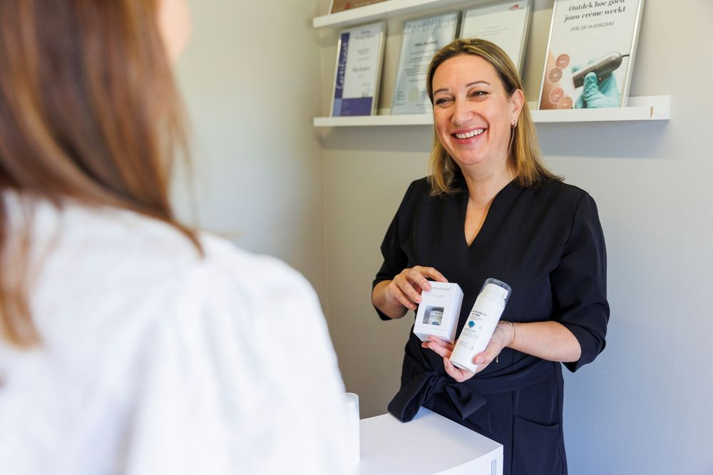
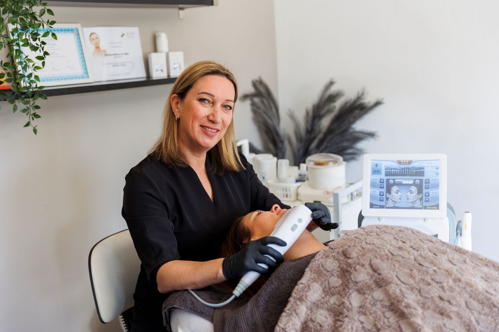
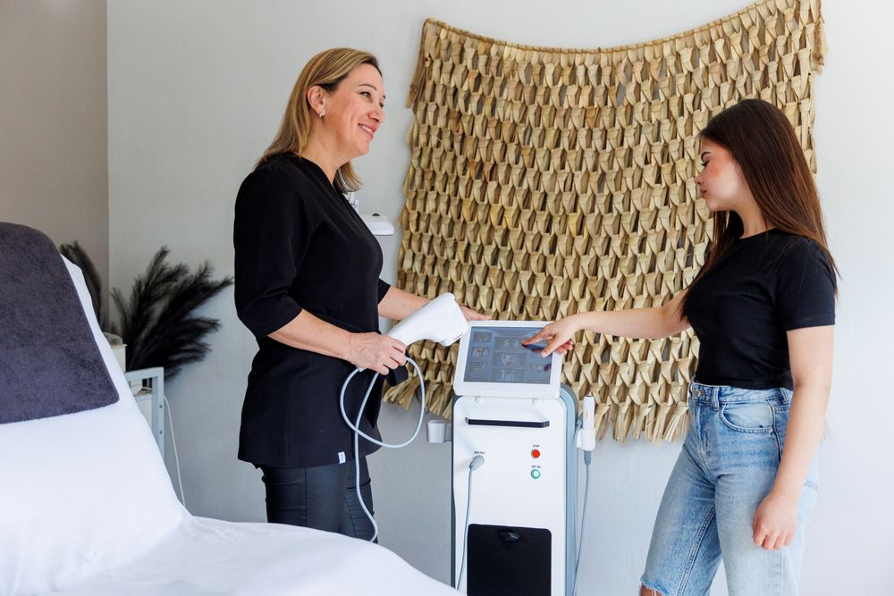
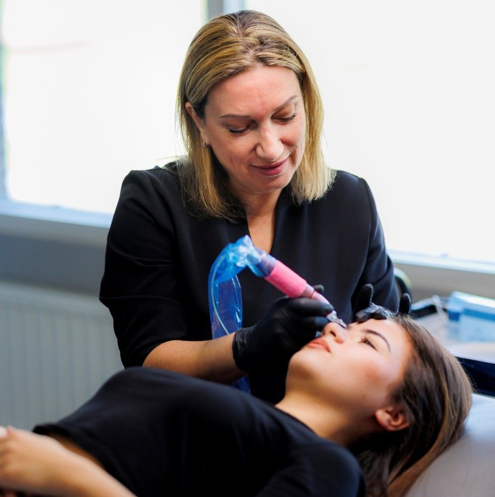
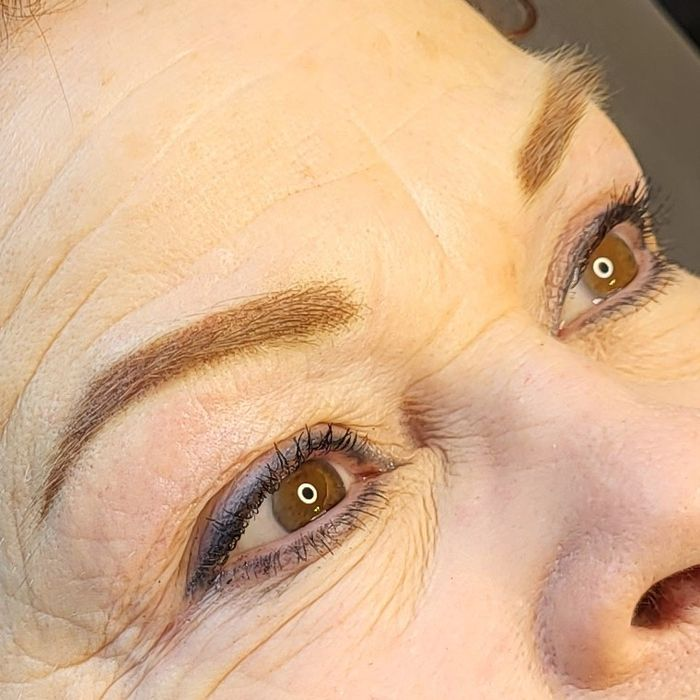
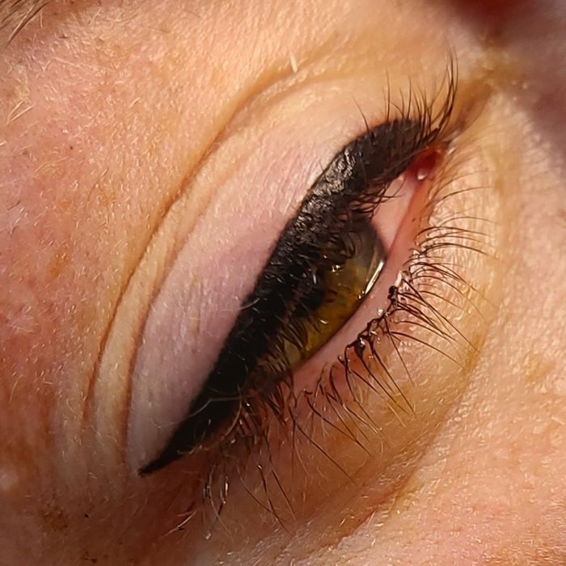
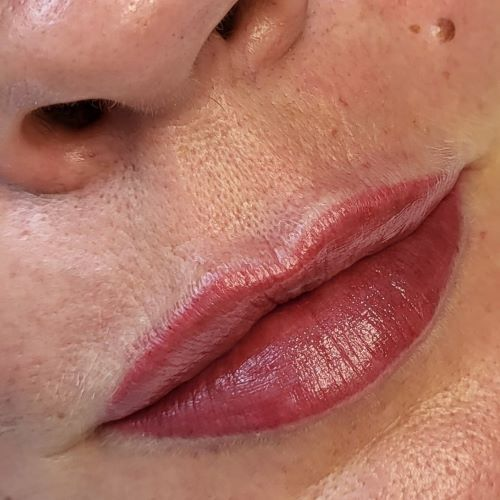
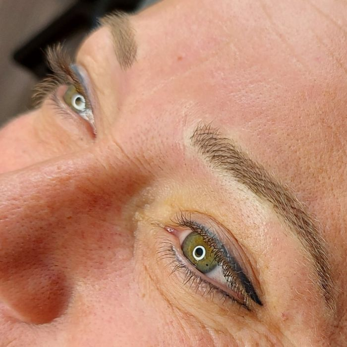
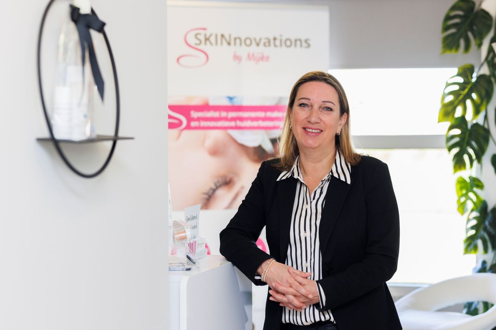

Huidverbetering
Last van acne, een gevoelige of rode huid, of al jaren alles geprobeerd? We herstellen je huidbarrière met een traject op maat en de producten van Dermaviduals.
Vanaf € 55Meer info

Al sinds 1997 in het vak en corneotherapeut. In onze praktijk in Roosendaal kijken we eerst wat jouw huid nodig heeft en maken we daar een plan voor.
Iedere huid vraagt om een andere aanpak. Klik op een behandeling voor meer uitleg en de prijzen.

Last van acne, een gevoelige of rode huid, of al jaren alles geprobeerd? We herstellen je huidbarrière met een traject op maat en de producten van Dermaviduals.

Er fris en energiek uit blijven zien, zonder dat het nep oogt. Met Hifu, microneedling en LED-therapie, of subtiele injectables via een ervaren cosmetisch arts.

Wenkbrauwen, eyeliner of lippen die altijd goed zitten, ook na het zwemmen of sporten. Natuurlijke vormen en zachte kleuren die bij jou passen.
Een losse gezichtsbehandeling is heerlijk, maar je huid verbetert er niet structureel door. Daarom werken we in een traject.
"Als je het niet kunt eten, moet je het ook niet op je huid smeren." Daarom werken we met Dermaviduals: zonder parfum, parabenen, siliconen en conserveringsmiddelen.
Afspraak makenVoor sommige vrouwen is permanente make-up veel meer dan een handigheidje. Als je door een ziekte je wenkbrauwen, wimpers of kleur verliest, geeft een kleine behandeling een stukje zelfvertrouwen terug.
Begin je binnenkort aan een behandeltraject? Dan maken we graag ruimte voor je in de agenda, vóór je traject start.




"Ik ben 35 jaar en heb altijd al acne in mijn gezicht. Wat ben ik dat beu zeg. Alle zalfjes en goedjes geprobeerd, zonder resultaat. Mijke had nog wel iets. Tuurlijk... dacht ik. Maar oké! Aaargh, Mijke is mijn reddende engel! Had ik dit maar veel eerder geweten. Wat een verandering!"
KlantHuidverbetering
"Lieve Mijke, ik ben echt ontzettend tevreden met mijn 'nieuwe' wenkbrauwen. Van bijna niets, naar hele natuurlijke wenkbrauwen! Op van de zenuwen, kwam ik in de salon. Nergens voor nodig! Ze verdwenen meteen toen ik bij je was. Heel rustig leg je alles van begin tot eind uit. Je bent een topper!"
MarleenPMU wenkbrauwen
"Heb 2x een Hifu behandeling ondergaan met een tussenpoos van 3 maanden en wat een geweldig resultaat is al behaald! Mijn gezicht ziet er zo goed uit! Zelfs mensen om mij heen zien duidelijke veranderingen en geven mij complimenten."
MaryHifu-behandeling
"Erg tevreden over de huidscan! Mijn huid is o.a. dankzij Dermaviduals olie echt al een stuk rustiger en egaler. Daarnaast is hij ook nog eens strakker."
AnneHuidscan en traject
"Helemaal super! Eyeliner boven en onder laten doen door Mijke. Ik was ontzettend bang en zenuwachtig. Mijke had me van te voren al gezegd dat dit niet nodig was en dat heeft ze ook daadwerkelijk waar gemaakt! Alles duidelijk uitgelegd, stapje voor stapje en gewoon pijnloos!"
SandraPMU eyeliner
"Ik ben al jaren zeer tevreden over Mijke en de producten van Dermaviduals! Ze geeft professioneel en eerlijk advies na een grondige analyse. De Dermaviduals producten zijn effectief, puur en heel fijn in gebruik."
ClaudiaHuidverbetering

Ik ben Mijke Boudens. Sinds 1997 werk ik in de schoonheidsbranche en na mijn opleiding tot schoonheidsspecialiste ben ik me steeds verder gaan specialiseren, met trainingen, congressen en opleidingen in binnen- en buitenland.
Als een van de weinige schoonheidsspecialisten in Nederland ben ik corneotherapeut: ik werk met een methode die de huidbarrière herstelt en het zelfherstellend vermogen van je huid verbetert. Ik vind dat je nooit uitgeleerd bent.
"Van niets iets maken, het verschil maken, met liefde en passie."
Stuur een mail met de behandeling die je wilt en de dagen dat je kunt. Je krijgt altijd per mail een bevestiging van je afspraak. Eerst een vraag over je huid? Bel gerust.